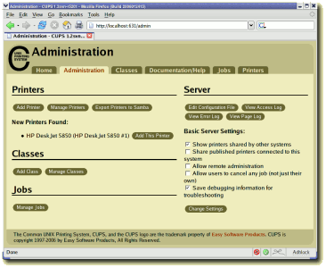
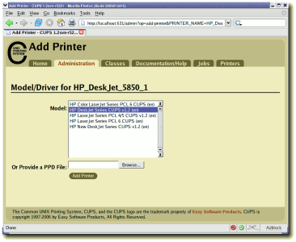
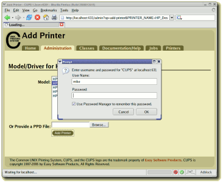
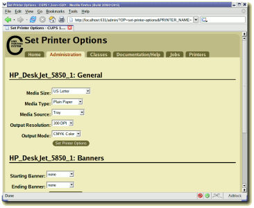
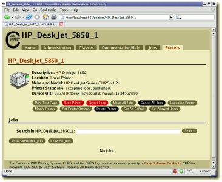
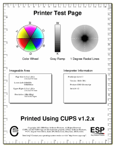

The Common UNIX Printing SystemTM, or CUPS, is the software you use to print from applications like the web browser you are using to read this page. It converts the page descriptions produced by your application (put a paragraph here, draw a line there, and so forth) into something your printer can understand and then sends the information to the printer for printing.
Now, since every printer manufacturer does things differently, printing can be very complicated. CUPS does its best to hide this from you and your application so that you can concentrate on printing and less on how to print. Generally, the only time you need to know anything about your printer is when you use it for the first time, and even then CUPS can often figure things out on its own.
The first time you print to a printer, CUPS creates a queue to keep track of the current status of the printer (everything OK, out of paper, etc.) and any pages you have printed. Most of the time the queue points to a printer connected directly to your computer via a USB or parallel port, however it can also point to a printer on your network, a printer on the Internet, or multiple printers depending on the configuration. Regardless of where the queue points, it will look like any other printer to you and your applications.
Every time you print something, CUPS creates a job which contains the queue you are sending the print to, the name of the document you are printing, and the page descriptions. Job are numbered (queue-1, queue-2, and so forth) so you can monitor the job as it is printed or cancel it if you see a mistake. When CUPS gets a job for printing, it determines the best programs (filters, printer drivers, port monitors, and backends) to convert the pages into a printable format and then runs them to actually print the job.
When the print job is completely printed, CUPS removes the job from the queue and moves on to any other jobs you have submitted. You can also be notified when the job is finished, or if there are any errors during printing, in several different ways.
Click on the Administration tab at the top of this page. If you have a printer connected to a USB or parallel port, you will see it listed as a new printer - click on the Add This Printer button, verify the printer driver CUPS has chosen for you, and click on the Add Printer button. If you do not see your printer listed, or if you have a network printer, click on the Add Printer button and follow the prompts.
If you are asked for a username and password, enter your login username and password or the "root" username and password. On MacOS X, the login username (or "short name") is typically your first name in lowercase.
After the printer is added, CUPS will ask you to set the default printer options (paper size, output mode, etc.) for the printer. Make any changes as needed and then click on the Set Printer Options button to save them.
Finally, click on the Print Test Page button to print a simple test page and verify that everything is working properly.
Once you have added the printer, you can print to it from any application.
|  Figure 1: The CUPS Administration Web Page |
 Figure 2: The CUPS Driver Selection Web Page |
|  Figure 3: The CUPS Password Dialog |
 Figure 4: The CUPS Set Printer Options Web Page |
|  Figure 5: The CUPS Printer Page |
 Figure 6: The CUPS Printer Test Page |